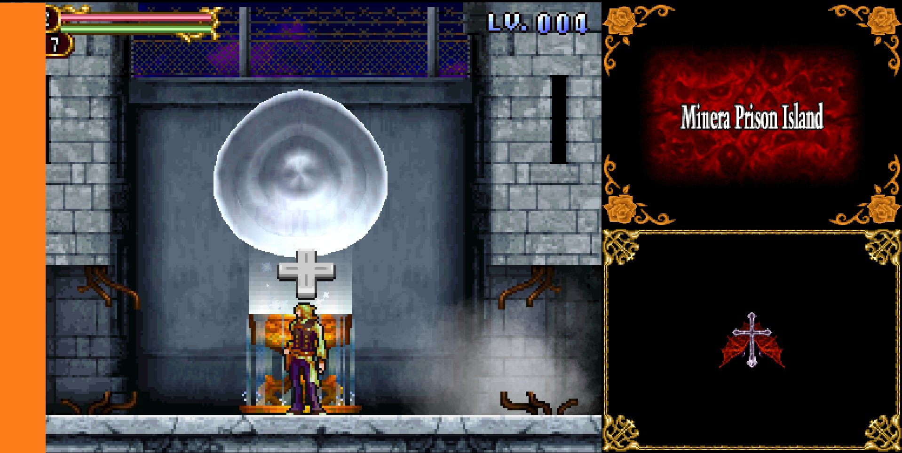
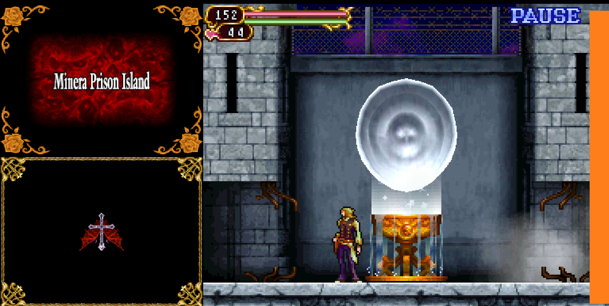

Despite being glitchless, this is currently the second fastest Main Category
Here is the current World Record by me:
Frozer held the initial record on DS, which you can find here
Dryace then lowered this record to 25:42, which you can watch here
The main quirk of this run is using the touchscreen to Teleport, which can be done with the Mouse/Right Stick Cursor on the Dominus Collection
If you're not comfortable with switching to your Mouse or using the Right Stick for movement in this run, then this category is not for you
The two things that shape this run are: effective MP Managment to keep up Teleports and fast boss strategies
However, despite being very strong, Albus is very fragile and will often die in a few hits, especially in late game
With that being said, I will go over my strategies for efficient MP management and boss kills
Important, make sure your mouse cannot go past the left or right edge of the game screen, depending on where your subscreens are
I personally made windows to detect my monitors as on top of each other as opposed to side by side for this run
If subscreens on the right, make sure it can't go past the left edge of the orange rectangle in the image below:
If subscreens on the left, make sure it can't go past the right edge of the orange rectangle in the image below:
If you're using the Dominus Collection's cursor, it's already programmed to stay within the main game screen so the prior adjustments do not apply
Lastly, we will be using Jump or Crouch backdash cancels in between our teleports, so go over those